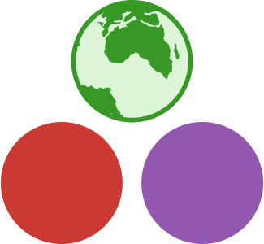

Edges of spherical polygons are great-circle arcs, not straight lines. They appear curved when drawn on a 2D projection.
Set operations must be computed in spherical coordinates — applying planar intersection to projected coordinates introduces area errors that grow with polygon size and latitude.
Near the poles or antimeridian (180°), planar results can be completely wrong. GO.intersection handles these cases correctly.
A spherical cap is defined by a center point on the sphere and an angular radius θ. All points within great-circle distance θ of the center belong to the cap.
The containment test between a cap and a point is a single dot-product, making traversal extremely fast. Spherical cap trees are the spherical analogue of R-trees or BVHs.
For a range query, the tree is traversed top-down. Any node whose MBR doesn't intersect the query is pruned — its entire subtree is skipped.
Nodes A1 and A2 here are fully outside the query window; only A3 and part of B3 need checking. Instead of testing all 16 geometries, only 3–4 are candidates.
R-trees support insert, delete, range_query, and k_nearest_neighbors. Used in SpatialIndexing.jl and ArchGDAL.